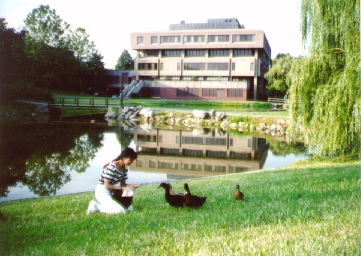

私の学校 (94.8)
寮の前の池の前で

|
６年間のＯＬ生活を終え、留学してきたころは周りのものすべてが新鮮でした。 考えなくちゃいけないこと、やらなくてはならないことがたくさんあって、不安ばかりの中で、緑がまわりにあるということはとても心が安らぐものだと思ったものです。 |

=学校で(94.8)=
|
２ヶ月だけの寮生活の終わりのころに撮ったものです。寮にいた２ヶ月の間は毎日のようにここに来ていたのに、寮をでてからはすっかりご無沙汰していました。 ずっと、いつでも行ける、でも忘れているところだったのですが、そういう生活もあと２ヶ月。なんとなく覚えておこうと思って載せてみました(^^) |
[ホームへ] [写真一覧へ]